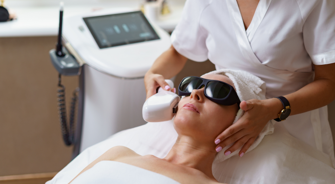
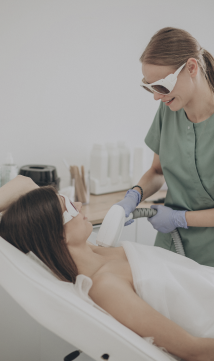
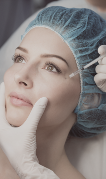
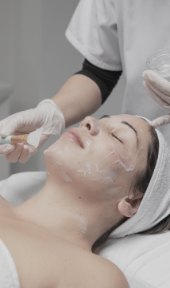

Sobre Nós

Sobre a TN
Na Clínica TN, acreditamos que a saúde da sua pele é o espelho do seu bem-estar geral. Fundada com a missão de proporcionar um atendimento dermatológico excepcional, nossa clínica combina tecnologia de ponta com um ambiente acolhedor para oferecer a você não apenas tratamentos eficazes, mas uma experiência verdadeiramente agradável e humanizada.
Nossos serviços mais procurados

Laser Fracionado
Trata eficazmente rugas e cicatrizes, enquanto promove a firmeza da pele ao estimular o colágeno.

Toxina Botulínica
Suaviza as linhas de expressão, oferecendo um aspecto mais jovem e descansado.

Peeling Químico
Ajuda a renovar a superfície da pele, removendo imperfeições e estimulando a regeneração celular.